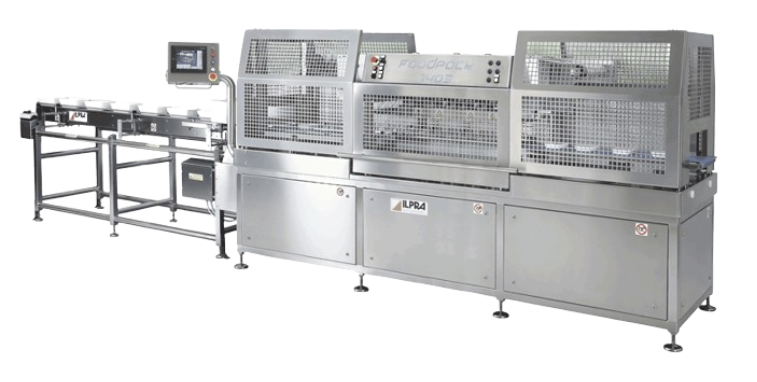
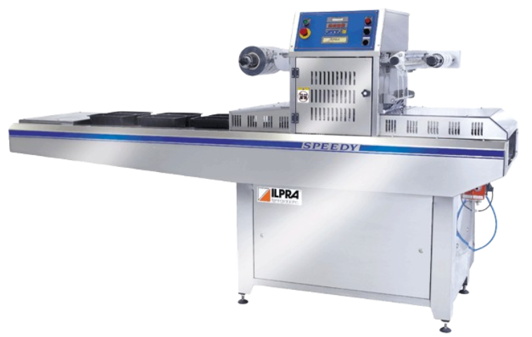

Karpide pakendamine
Pakkimisliiniga
ILPRA FP 1403

ILPRA tippmudel FOODPACK 1403 on loodud automaatne pakkimisliin suurele tootlikkusele, võimaldades näiteks DYNO pakendeid pakkida kiirusel 60 karpi minutis!
Pakkimisliin on mehaanilise ülekandega, mis tagab alati parima keevituskvaliteedi. Suruõhuvaba süsteem vähendab ka tootmiskulusid, sest puudub vajadus võimsa kompressori järele.
FP 1403 rakendab keevituspeale koormust kuni 7 tonni, mis on piisav sõltumata materjalidest ja karpide arvust töötsüklis.
Liin on valmistatud roostebabast terasest ja omab ohutusklassi IP 65, mis lubab töötamist märjas ja agressiivses keskkonnas.
Pakkimisliini igale töösõlmele on võimaldatud hea juurdepääs tänu siinidel liikuvatele katetele. Puhastamine on kiire ja kõrge hügieenitase on garanteeritud. Pakkimiprotsess on pidev ja ei vaja seiskamist ka kilevahetusel!
Töövormide vahetamine on vajadusel kiire ja lihtne tänu mehaanilisele süsteemile.
PLC eestikeelne puutetundlik juhtpaneeli abil saab üles seada kuni 30 erinevat tööprogrammi.
Liinile saab lisada palju lisaseadmeid alates karpide paigaldamisest kuni markeerijateni välja.
Rohkem infot: ILPRA FP 1403
ILPRA SPEEDY
ILPRA SPEEDY on kõige polulaarsem pakkimisliin karpide automaatseks pakkimiseks modifitseeritud keskkonnas. Antud mudelil on piiramatu arv versioone ja lisasid, mis tähendab alati sobivat lahendust teie toomises. Töövormide vahetus on lihtne ja kiire (ca 5 minutit). Speedy tootlikkus pakkimisel vaakumi ja gaasiga on kuni 11 tsüklit minutis tõites juba keskmise suurusega tööstuse vajadusi. Ühes töötsüklis võib olla kuni 4 karpi tänu laiale keevitusalale (270x380mm) ja Speedy 2 versioonil keevitusala (330x570mm)

Võimalikud versioonid:
Speedy Linear V/G - kompaktne versioon, mis võimaldab kasutada ka Basic ja Rotobasic mudeli töövorme.
Speedy V/G - turuliider, mida iseloomustab parim kvaliteet ja hind.
Speedy Mechanic V/G - tipptehnoloogiline masin, mis tagab alati parima töötulemuse tänu suruõhuvabale süsteemile.
Speedy 2 V/G - suur mudel, mis võimaldab näiteks pakendada kaks Dyno pakendit töötsüklis kiirusega: 22 karpi minutis!
Lisaseadmed:
Karpide pigaldusjaam konveierile
Kile markeerijad
Trükitud kile kasutamise võimalus
Doseerimissüsteemid
Topeltkaane paigaldusjaamad
Hapnikuga pakkimise kaitsesüsteem
Pikendatud laadimiskonveier
PROGAS süsteem gaasi lisamiseks otse karpi, mis kiirendab protsessi ja vähendab gaasilulu
Termomehaaniline punktkeevitus, mis tagab määrdunud karbi keevituskvaliteedi
Rohkem infot: ILPRA SPEEDY